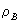

Chapter 2 Property Overlaps
<
cover
| measures
| overlap
| rotation
| csm
| ccm
| bibliography
>
This section looks first at the general approaches to defining a symmetry/chirality measurement and then at the use of property overlaps in the derivation of a molecular similarity coefficient. A wide range of molecular properties can be considered by this technique: volumes, masses, e- densities, e- wavefunctions and molecular electrostatic potentials (MEPs). Only some of these are considered here.
2.1 Approaches
There are two main approaches to the problem of deriving a symmetry / chirality measurement. The first involves the calculation of a molecular similarity coefficient, called an S(property). This is a measurement (normally from theoretical models) of the amount a particular property overlaps between test molecules.(17) The simplest variant to visualise involves the comparison of volume overlaps.
To take an example, if the van der Waals’ surfaces of a pair of enantiomers is used to create models in silico, then the volumes of these models can be calculated. If they are then superimposed in 3D space the maximum amount of volume overlap will give a quantitative value for how ‘similar’ the two molecules are. This value can then be used as a chirality measurement. The less similar the two molecules, the less the maximum volume overlap and hence the lower the value of S. This is the simplest approach for calculating a coefficient but many of the methods mentioned in this reviews are based on this. (Though, in many cases S measures the amount of ‘excess’ volume and hence chirality rather than achirality – in such an instances; S = 0 for identical structures.)
Even with this simple system a number of matters need to be taken into account. The two structures must be static. No vibrational change is allowed or alternatively it must be built into the model. This is possible through the use of vibration / time averaged volumes. Similarly, the model should be ridged since bond flexibility or fluxionality make the calculations enormously more difficult (the coefficient must be calculated for every possible configuration of the bonds). In addition, the two models must be at the same scale and should preferably be normalised with respect to the property being measured. This allows the resulting S value to be expressed as a unitless number;
0 £ S £ 1 (sometimes scaled to 0 £ S £ 100 for convenience)
A common use of this approach is to measure the relative chirality between two enantiomers. The measurement is there of the amount of chirality inherent in the enantiomeric pair and not in a particular molecular species. It should be noted that the value of S must be dependent on the property being used to measure it and different S(property) measures should not be compared. Correct choice of the overlap property is therefore essential in deriving a useful chirality measurement and as a result many different techniques have been put forward in the literature. The main disadvantage of this approach is that it can only yield relative measurements which do not give any feel for the absolute symmetry of the molecules concerned.
Returning to our pharmacological example, we can see that two enantiomers that differ only by a single pair of atoms are likely to have very similar biological activities. However, enantiomers that differ by the position of major functional groups might be expected to show very different activities. The smaller the calculated value of S, the more similar the enantiomers and hence the less difference we would expect in their activities. Such a measure would be immensely useful in identifying potentially dangerous structures. This is particularly relevant since the racemising behaviour of a drug is unlikely to be the same in vivo as it is in vitro.(7)
An alternative approach is to measure the chirality or symmetry of a molecule relative to any symmetry group. If we were to take a methane molecule we could measure its symmetry relative to the Td symmetry group (high correlation!) or to the C4h planar group (low correlation) or even to the Oct group, if we wished to. This approach is mathematically more complicated since it requires the location in ‘molecular space’ of the nearest structural relative to the test substance that has the required symmetry. However it has two major advantages the measurement can be made relative to any point group or symmetry element and the resulting values can be directly compared with any other molecular structure. In particular, the concept of a Continuous Symmetry/Chirality measurement is extremely important and will be discussed in detail later in this review.
2.2 Chiral Efficiency
An excellent example of the property overlap approach was put forward by Gilat et al. in 1980.(2,10,11) In this and later papers they produced a series of chirality measurements based on the minimisation of volume differences between an object and its reflection in a plane mirror – and the later extension of these ideas to other molecular properties. The method used can be described as follows;
Take a chiral object A and its reflection in a plane mirror A’. Superimpose the volumes of A and A’ in such away as to produce a symmetric (achiral) object of minimal volume. This can be done by ensuring that both their centres of volume/mass and their principal axes coincide. The resulting symmetric object can be considered to be made up of two separate parts:
a) that part of the volume that exists in both A and A’: (A Ç A’)
b) the non overlapping volume: (A È A’ – A Ç A’) = n
Defining the volume of either A or A’ as V (they are equal), then the relative amount of chirality for a given chiral object (termed ’chiral efficiency’) can be defined as the dimensionless coefficient c v;
This coefficient has a number of important properties:
1) It is independent of the actual volumes, so normalisation is not required.
2) The coefficient is proportional to the fractional amount of n . Hence it can be considered to be proportional to the amount of chiral volume contained within a chiral object.
3) c will vary between 0 and 1. As the amount of symmetry difference between A and A’ is decreased so is c Hence two identical molecules will have a chiral efficiency of zero.
4) c depends on the choice of axis in space, so it is actually an element of a vector or tensor.
These properties turn out to be fairly general for chirality measurement techniques. In particular the variance of c with orientation of the test objects is important, and finding the best orientation and hence maximum property overlap is probably the most computationally intensive part of any chirality measurement. Another problem is with the definition of volume – where should the boundary surface be placed? The position of the boundary will obviously directly affect the resulting measure. A tight boundary close to the nuclei will show more detail and therefore will give a higher chirality measure than a looser, smoother surface (see [1.2.1]).
Returning to the volume overlap measure, we can see that very similar equations can be written for any other property that can be treated as an overlap in a similar way (with terms directly analogous to n and V);
Moment of Inertia
Mass
This calculation of the chiral coefficient of mass relies on the object having a constant density so that M = V and m = n . This might be acceptable if we were interested only in the macroscopic or aggregate behaviours, but is likely to have poor correlation with physical properties. A better approach is to take a varying density into account and there are two methods for doing this.
The first defines the density as a function of r (the distance from an arbitrary fixed point – probably the volume centre). In this case, m is given as;
where V’ is the volume for which This approach assumes that the mass density functions of the molecules are known. However this may not be the case and it is probably easier just to model the structure as a collection of discrete masses at fixed points in space. The mass overlap measure can then be derived from the total value of m. This approach has obvious advantages for the chemist since it mimics the standard ‘rod and ball’ molecular model.
Given a collection of atoms of mass mi where i = 1, …, n at distances ri from some fixed point (again probably the volume centre) then the variable mass distribution over a volume V (containing all the atoms), can be defined as;
where mi* at ri is the mirror reflection of mi at r. The transformations, overlap minimisation and coefficient calculation is carried out in exactly the same way as in the simple case.
As Gilat et al. points out, the actual choice of c (property) must be linked to the trends that we are trying to investigate. For example, a measurement based on electronic wavefunctions would be significant when considering reaction selectivity. The process for calculating c Y is exactly the same as for the other properties but again assumes that the function of Y is known (or more likely, an approximate Y has been calculated by a software package). Letting c Y = y / 2Y and assuming the denominator is normalised we get the following by analogy to the variable mass distribution case:
2.3 Electron Density Measures
An alternative chirality coefficient based on the superimposed overlap of charge density functions was proposed by Carbo et al. in 1980.(12) The method is general and can be applied to any pair of molecules.
Given two molecules A and B with known electron densities and , a general matching measure of the electronic distribution of the electrons can be defined as the norm of the difference between the two densities:
Holding the structures of A and B constant (no bond movements) means that only the third term will vary with the relative positions of A and B in space. Keeping A fixed, we can see that molecule B has a total of three translational and three rotational degrees of freedom relative to A. In order to maximise the amount of overlap we must find the optimum relative positions of A and B to yield the largest value of e AB. This is equivalent to finding the minimum value of the third integral.
According to Carbo, the e AB is not a good measure to use since it is not independent of the absolute nature of the two molecules concerned (we want a measure dependent only on their relative natures). Hence it was suggested that the third integral is removed and put into a correlation index derived from pattern recognition procedures. The new measure is therefore defined as follows:
This measure has the range 0 £ SAB £ 1 where a value of 1 implies a perfect match (in contrast with Gilat’s Chiral Efficiency). Later work by Hodgkin and Richards (13) has thrown up a couple of problems with this measure:
1) The measure is invariant to changes in intensity and hence:
2) If the densities of the two molecules correlate
then this measure will tend to unity.
They proposed the following alternative measure which does not suffer from these problems (and is in fact rather closer to the original equation):
Interesting progress has been made towards identifying a quantitative structure activity relation (QSAR) between the potency ratios (eudismic ratio) of enantiomeric drugs and chirality measures. Since pharmaceutical companies are required to justify the production of a racemic drug in preference to a homochiral one, understanding such relationships is extremely important. A QSAR would allow better explanation of experimental results and predictions of new drugs potencies within a series. Recent work (1993) by Seri-Levy and Richards showed good evidence for a correlation between potency (required drug dosage) and Carbo’s charge density overlap measure.(7)
2.4 Lego Approach to Electron Density
The original proposal involved an ab initio calculation in order to get the electronic density function. However, this approach is very costly in terms of computer time and as a result a number of alternative methods have been suggested. Of these, perhaps the most interesting are those based on the concept that a molecule can be divided up into smaller fragments and that these fragments are fairly typical over a wide range of possible structures. We might assume that a bond between two sp3 carbons will always resemble that in ethane (or to a better approximation, the central bond in propane). If this is the case, we can construct common organic molecules out of a limited number of standard fragments. By characterising the electron density in these small fragments, it should be possible to build up a model for the density of the larger molecule in exactly the same way. The obvious advantage of this method is the hugely reduced number of calculations when compared to ab initio techniques.
A good example of this is the Molecular Electron Density Lego Approach (MEDLA) proposal by Mezey et al.(14) This uses a database of molecular fragments and their associated fuzzy electron densities from which larger ab initio quality electronic charge distributions are built. In their words the process is ‘reminiscent to building structures using Lego blocks’. The method requires only the Cartesian co-ordinates and the identity of the nuclei for the construction of the molecular charge distribution – all other information is held in the database.
This idea has been used a number of times in an attempt to build up total molecular orbitals (MO) from the known orbitals of molecular fragments. However, this has proved rather unsuccessful, since the requirements for renormalization and a constant number of orbitals means that ideal linear additivity of fragmental MOs can’t be obtained. This isn’t a problem with electron density functions.
Unlike earlier proposals that used fixed electronic charge boundaries, the MEDLA approach uses fuzzy edged density ‘clouds’ which are calculated by considering small parent molecules with standard and important non standard geometries. The electron densities of these small parent molecules are calculated by standard ab initio methods and the densities of the required fragments extrapolated from these. The results can then be stored in a database.
The test molecule is then partitioned (split up) into known fragments. Their density distributions are then recovered and fitted together with any required rotations and translations in order to match the arrangement of the fragments in the molecule. The sum of all these distributions is then taken to be the molecule’s electronic density distribution. For example, the distribution of methane can be modelled as the combination of one C (sp3) centre and four tetrahedrally arranged H (s) centres [2.4.1].
Mezey et al. then used an adapted version of Carbo’s S(electron) measure to compare the similarity of the results to those produced by direct ab initio calculation. The adaptation used is that of Meyer and Richards and modifies the original equation to take into account the similarity of both van der Waals surfaces and electronic isodensity surfaces (as used here):
The molecules are mapped onto a 3D Cartesian point grid and BAB is the number of points that lie within the surfaces of both A and B. TA and TB are the number of points within the surfaces of A and B respectively. This measure is much easier to evaluate from a computer model since it simply involves the tallying up of grid points.
The results from MEDLA have excellent correlation (96-100%) with those from GAUSSIAN 90 using the 6-31G basis set. More importantly the MEDLA process requires a small fraction of the computer time that the ab initio process does and therefore could conceivably be used to replace the fused spheres used in real time modelling with more accurate electron isodensity surfaces.
--> next
<
cover
| measures
| overlap
| rotation
| csm
| ccm
| bibliography
>